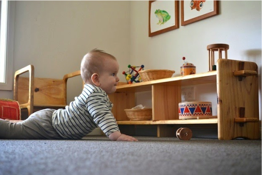

Maria Montessori de Madrid

|
Nuestra Enseñanza |

|
Inicio
¿Quienes somos?
Nuestra Enseñanza
Matrícula
Contacto
|
Montessori 0-3 años
Actividades de inspiración Montessori en los 3 primeros años: Una idea fundamental del método es la independencia, por lo tanto: Mucho suelo, para favorecer el reptado y el gateo y por lo tanto su autonomía (evitar el uso de parques, taca tacas y demás objetos que no permitan al niño su movimiento libre) (Si por diversos motivos te es imposible y necesitas dejar a tu hijo en algún lugar seguro mientras vas al baño… ¿Por qué en vez de utilizar un parque, no adaptas toda una habitación (por ejemplo la del bebé) y colocas en la puerta una puerta de barrotes de las que se utilizan en las bajadas de las escaleras? El bebé estará fuera de peligros y dispondrá de un gran espacio para desenvolverse, reptar, gatear, ponerse de pie…) |
 |
| INICIO | E-MAIL: ies_montessori_madrid@gmail.com | TLF: 657734328 / 957463521 |
|